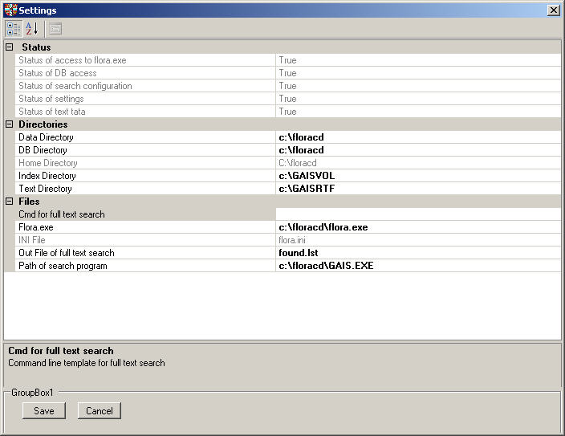

Here you can change the configuration of the application. If there are errors in the configuration, this form is shown at startup for correcting configuration errors (mostly wrong paths of directories of files).